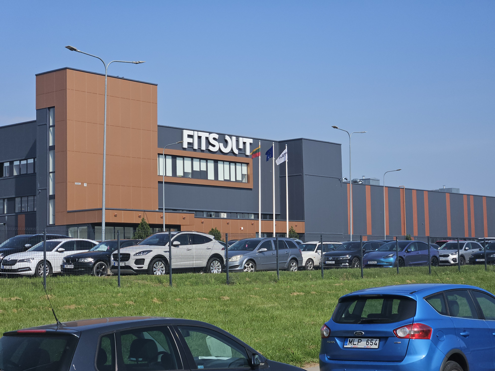
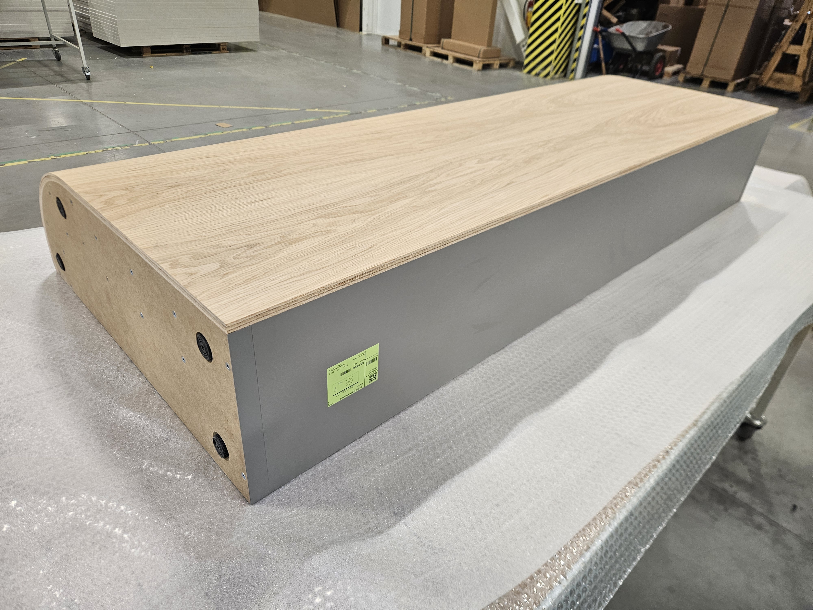
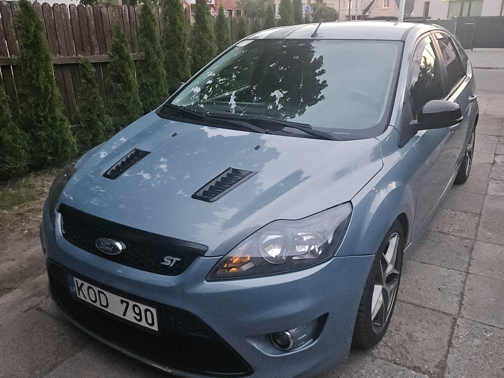
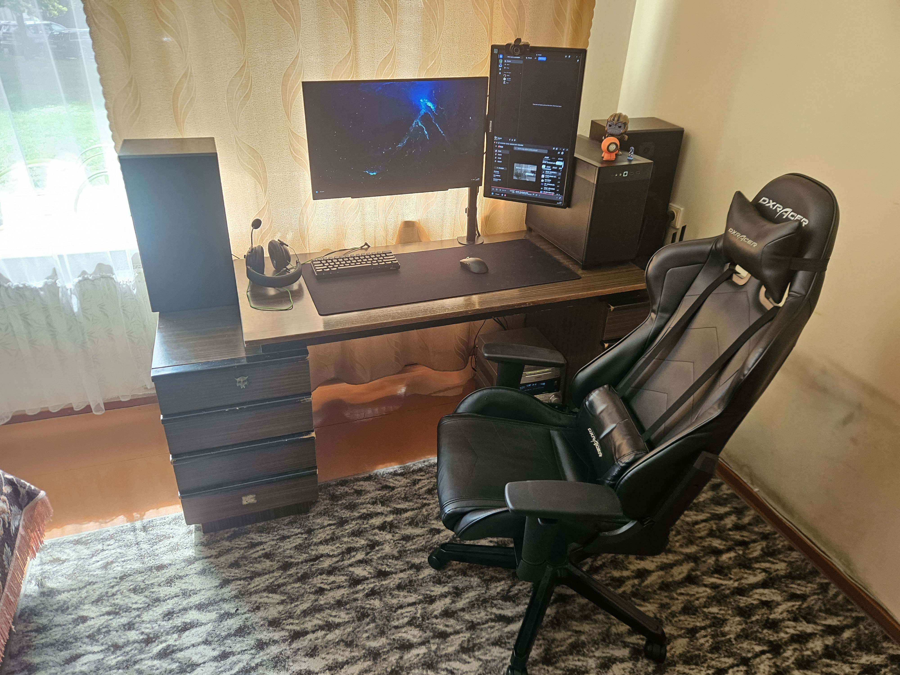

What did I do during the summer?
To begin off, I have not done much during the summer. Most of my summer was me just working, althought I can still talk about my experience during the 3 months of work.
Intruduction
First off, I worked at a company named Fitsout which specializes in making furnuture for other stores to sell, for example: tables, chairs, cupboards and so much more. Fitsout works with all types of materials, wood of all kinds, steel, iron, aluminum and glass. My main job was to pack everything that was built and get ready to be sent out to where ever it needed to be, but that wasn't my only job, I had to also work in a warehouse, build furniture and make some parts from time to time also. Here are some photos of the compony and the furniture I worked with mainly.
 
How did the summer go?
This was the first job that I ever had and if i was completely honest with everyone, this was the best experience I could have had. Everyone I worked with was extremely kind and helpful, even though I had a good amount of work for someone new and with no experience, it was extremely easy to learn and work. After working here I had not only gotten a good amount of money, but I also got a ton of experience.
What did I do with the money I got?
During the time that I was working the first thing I bought was a new graphics card for my computer, to be more exact, the RX 9060 XT 16gb model from XFX. If you are interested in knowing more about my pc you can click here. Butt my next purchase was my very first car, a Ford Focus Mk 2 from 2008 with an 1.8l diesel engine pushing out 85kw of power. Is it any special? No, but it's my first car and after getting the main maintanence out of the way, I could not ask for anything better.
 